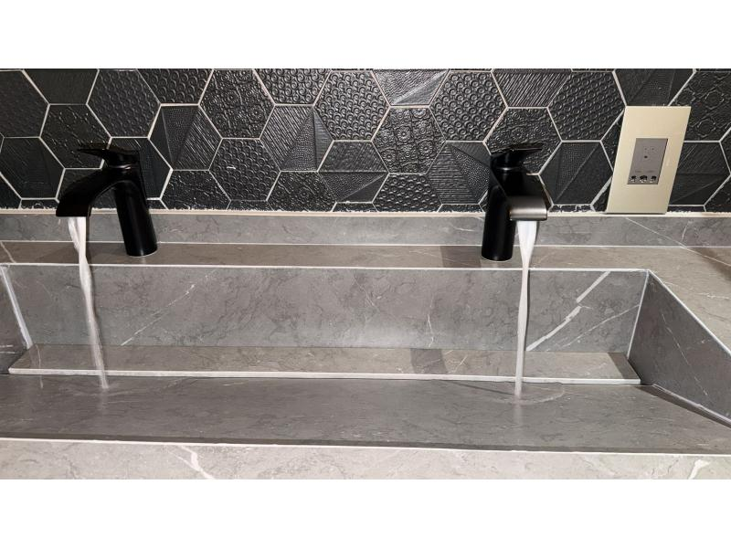
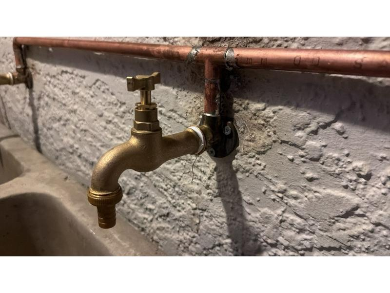
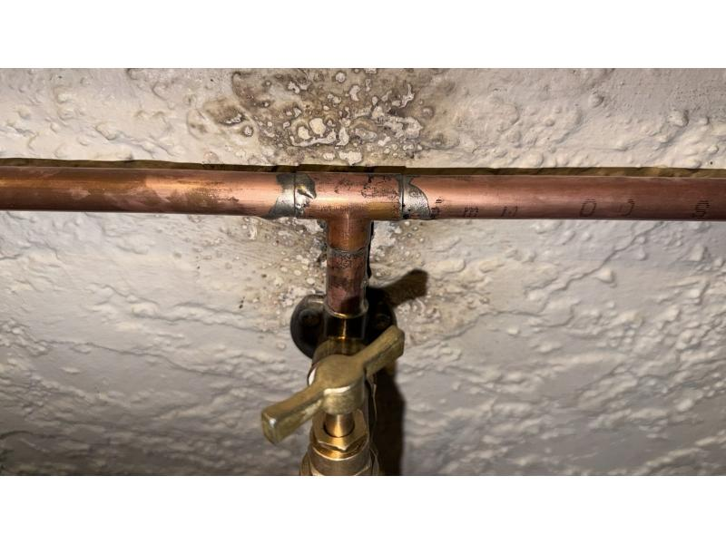
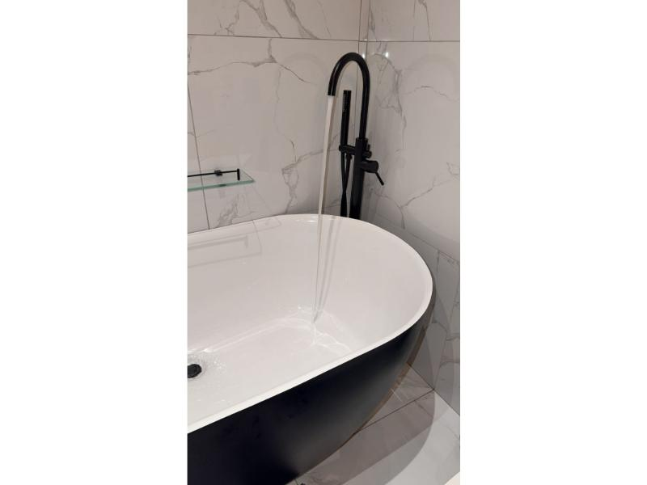

Leak Detection & Repairs
Find and address leaks to help protect your home or business from further water damage.
Ask us about this ↗
Professional plumbing services for homes and businesses across Pretoria and Tshwane.
Speak directly with our team 072 452 0988From everyday repairs to new installations, get practical plumbing help from a team that makes getting started simple.
Find and address leaks to help protect your home or business from further water damage.
Ask us about this ↗Get in touch about a burst pipe so we can discuss the right repair for your situation.
Ask us about this ↗Ask our team for help with a blocked drain in your kitchen, bathroom or elsewhere.
Ask us about this ↗Get assistance with geyser plumbing, repairs and installation for your property.
Ask us about this ↗Plumbing work for bathroom and kitchen fixtures, fittings and improvement projects.
Ask us about this ↗Have a plumbing job in mind? Tell us what you need and we’ll help you take the next step.
Get in touch ↗Don't let a plumbing problem become a bigger problem. Get in touch with Genuine Plumbing to discuss your plumbing needs.

Good service starts with listening. We’re here to make the next step in your plumbing project feel straightforward.
Clear communication and a dependable approach to every job.
Care and attention brought to each plumbing task.
Your needs come first, from first contact to completed work.
Call or message to tell us what you need help with.
Genuine Plumbing provides professional plumbing services for customers in Pretoria and surrounding Tshwane areas. Our focus is on reliable service, quality workmanship and making it easy for customers to get the plumbing assistance they need.
Whether it’s a repair, a new installation or something that needs a closer look, we’re ready to hear about it.
Let’s talk about your plumbing ↗

Details from Genuine Plumbing’s supplied project photos. Tap an image to view it larger.
See what customers have shared about their experience with Genuine Plumbing on Google.
View Google ReviewsGenuine Plumbing serves customers in Pretoria, Tshwane and surrounding areas. Get in touch to discuss your location and plumbing needs.
Tell us a little about what you need. We’ll be happy to hear from you.